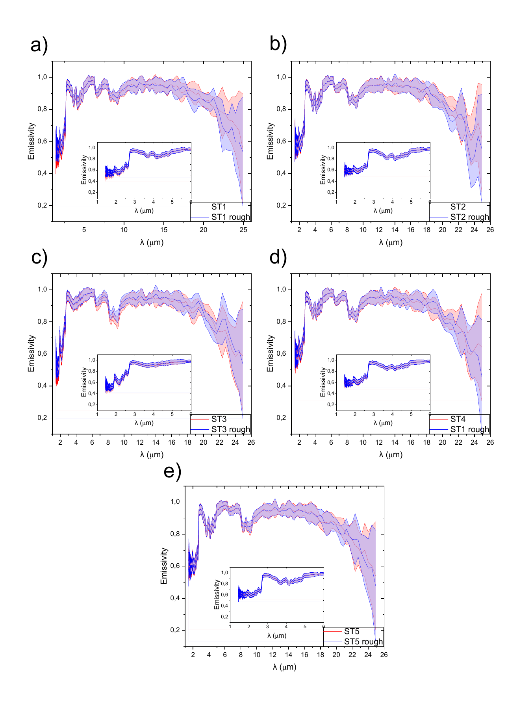
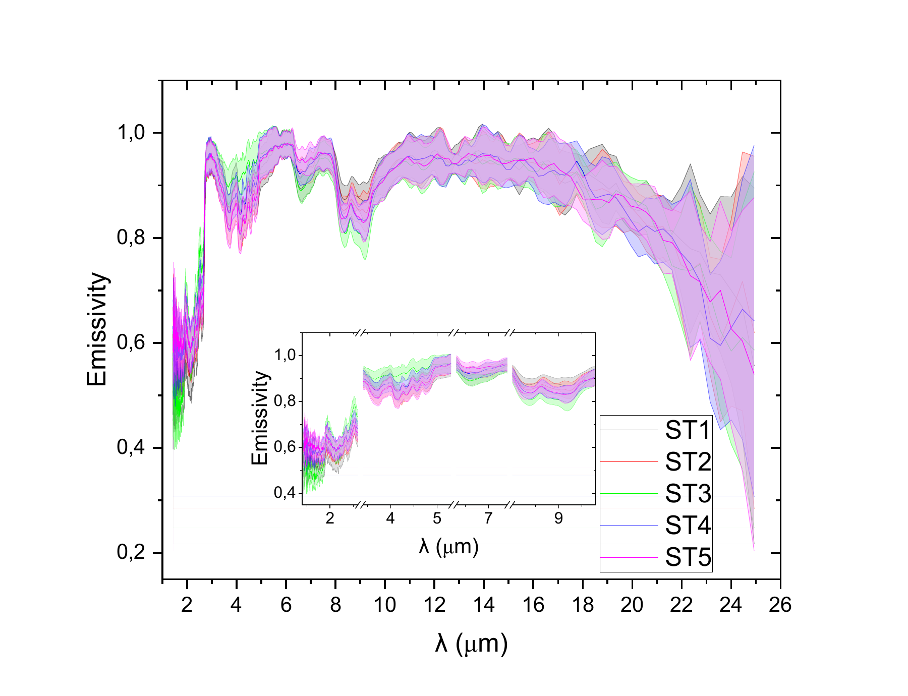

Original draft · supplied 15 October 2026
Original wording, including unresolved placeholders and claims discussed in the review. The website adapts figure paths and equation display only.
Emissivity measurements on sand
T. Echániz and I. Urcelay-Olabarria
Introduction
We report normal emissivity measurements at room temperatures of different sand samples: ST1, ST2, ST3, ST4 and ST5.
Experimental details
The emissivity of different sand-samples have been calculated based on reflectivity measurements at room-temperature. The directional-hemispherical total reflectance was measured with an integrating sphere at an incident angle of 13°. That integrating sphere has a diameter of 75 mm, and is equipped with a DLaTGS detector. The usual comparison measurement method has been used, by comparing the radiance reflected by the sample to that reflected by an Infragold reference (). The reflectivity of the sample, , is obtained as following:
(1) being and the measured sample signal and the reference signal, respectively.
In each experiment we have collect 100 scans, and we have calculated the mean value and its corresponding standard deviation; for both, the sample and the reference. In order to calculate the error of the measurement, it has been considered as a combination of the misalignment (smaller than 2%),....
The standard uncertainty is taken as the combination of the uncertainties due to the signal to noise ratio in the sample and reference reflectance data. It is small 2% in the m range, but increases rapidly at higher wavelengths due to the low signal from the source in that range.
Finally, the emissivity, is calculated as
(2)
The emissivity of a material depends strongly on its surface conditions. Since the sample is already very irregular, with different sand-grains oriented in different directions, two different measurements were carried out, on each sample, to see if the conditions of the surface of the samples affected the measurements. In the first experiment, the surface of the sand-sample was smoothed, whereas for the second measurement, the surface was very irregular. The results plotted in Fig. 1 show that the emissivity measurements barely change due to surface conditions. In fact, in all the cases both curve collapse at low wavelengths, as observed in the insets. Small deviations can be observed at high wavelengths, where the experimental errors are relatively bigger. Thus, these measurements suggest that the intrinsic characteristics (grain size and arbitrary orientation) of the sand the limiting factors for this experiment. From now on, all the presented results will correspond to those samples with smoothed surface.
Falta cometar algo sobre el comportamiento de los materiales ceramicos. Y sobre el angulo.

With the aim of comparing the behavior of the five samples, the data have been plotted in Fig. 2. The emissivity of all the samples are very close to 0,9 for wavelengths between 3 to 18 cm. At lower values of , the emissivity decreases down to about 0,60,1. There are two intermediate regions where there is a significant decrease of the emissivity: from 3,5 m to 5 m, and from 8 m to 10 m. Moreover, it is in those regions where the samples present the biggest deviations. So far, we suggest carrying out a more rigorous characterization of the samples to determine the origin of those effects.
